/ · 优化前后对比用 ui-design-with-ai 六阶段流程对生意说 Web 首页做一次 REDESIGN：把原来静态的「原话 → AI 整理 → 可生成」示意卡，改成访客可以亲手操作的演示台面。下面是同一份源码、同一台机器上拍的优化前 / 优化后截图。
左右拖动滑块：左半是优化前，右半是优化后。两张图都是 390×844 的同尺寸截图。注意标题行数从 4 行收到 3 行、台面比原来的示意卡更紧凑，所以标题以下的元素在两侧不是同一高度——那正是这次改动本身，不是渲染错位。
同一比例并排。左边优化前 390×2749，右边优化后 390×2795。
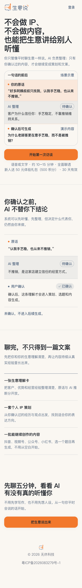
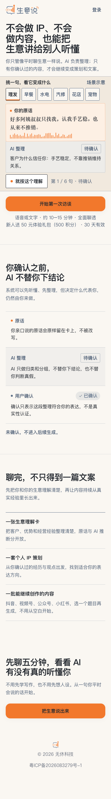
优化前页面上只有 4 个链接，没有任何可操作对象。优化后访客可以亲手完成一次完整循环，下面四张都是同一句原话（理发）。
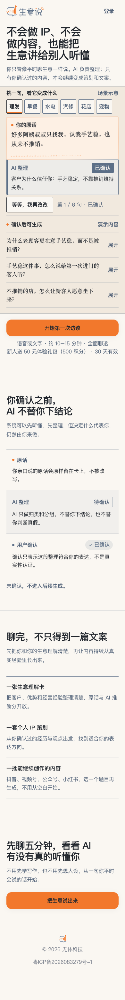
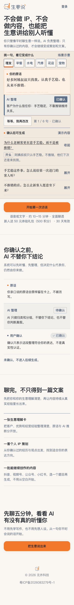
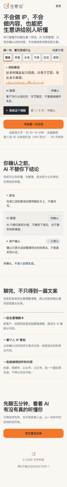
全部控件可键盘到达，`:focus-visible` 有可见轮廓。下图是确认按钮获得焦点时的台面。
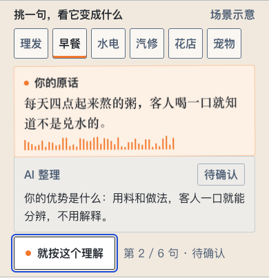
6 个行当纸签切换演示原话，每句原话有自己的声波形状（由文本确定性派生，不是随机）。
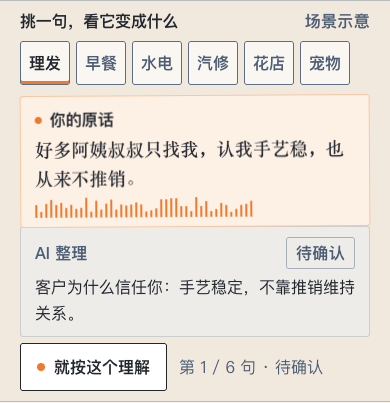
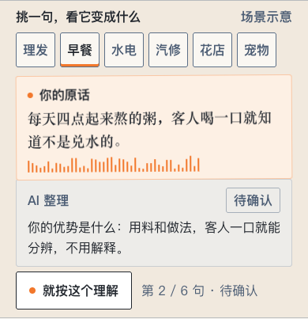
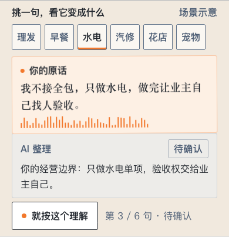
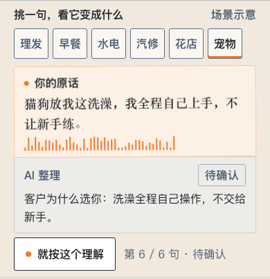
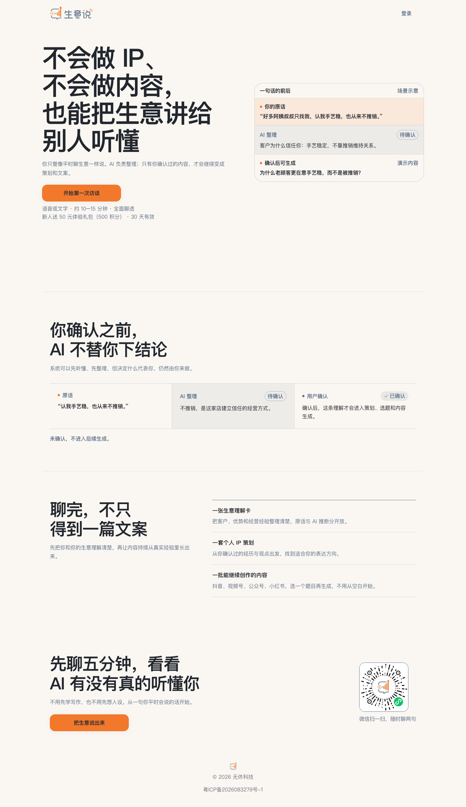
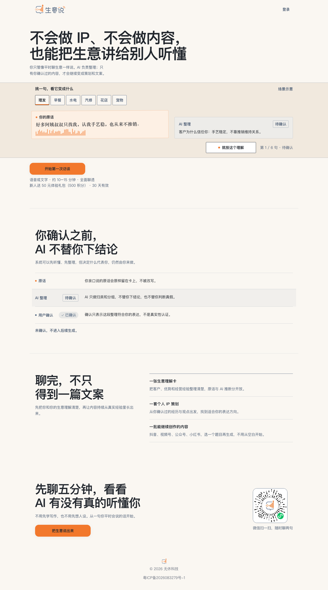
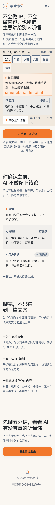
| 维度 | 优化前 | 优化后 |
|---|---|---|
| 可操作对象 | 0 个。全页只有 4 个 <a>，无任何 JS 交互（页面是 Server Component，无 hooks）。 | 可玩 6 个行当纸签 + 确认 + 撤销 + 3 条可展开选题，全部键盘可达。 |
| 「未确认不进入生成」 | 靠一行文字声明：未确认，不进入后续生成。 | 靠结构 未确认时选题节点**不存在于 DOM**（不是隐藏），确认后才渲染，撤销后消失。 |
| 核心机制的表达 | 静态三段卡，访客只能读。 | 可做一遍 选一句 → 看整理 → 自己拍板 → 看到产物 → 反悔。 |
| 行当覆盖 | 1 句演示原话（理发/熟客）。 | 6 个行当各 1 句（理发 / 早餐 / 水电 / 汽修 / 花店 / 宠物），各自有自己的整理结果与 3 条选题。 |
| 声音的视觉化 | 无。橙色只作为小圆点和标签底色。 | 每句原话有一条 44 段声波，形状由该句文本确定性派生；确认后声波收束成一条线。 |
| 排版角色 | 全站无衬线，人说的话和机器的整理看起来一样。 | 人说的话用衬线（Songti SC），机器的结构用无衬线；两者在字体上分开。 |
| 台面与出血 | 示意卡在内容列内，圆角卡片。 | 台面满宽出血，原话纸条轻微倾斜并溢出内容列 16px；容器改为 3px 直角。 |
| 重复叙事 | 首屏示意卡与第二段「原话/AI 整理/用户确认」用同一句原话讲同一件事。 | 第二段改为讲「确认这一步为什么不能省」（原话不被改写 / 只归类不下结论 / 确认不等于真实性认证）。 |
| 死代码 | landing.module.css 有 5 个未被引用的类（trustSection/trustGrid/trustLead/boundaryList/policyLinks）。 | 已清理。 |
| 首屏契约 | 390×844 首屏：标题、演示、主 CTA、时长与积分都在（facts 底部 ≈800）。 | 保持 390×844 首屏 facts 底部 799；桌面 1440×900 从「CTA 在折线以下」变为 facts 底部 833。 |
| 可访问性 | 小字用蓝灰 #5C6F87；在暖纸画布上 4.82:1，勉强过 AA。 | 新增台面色后，同色在台面上只有 4.28:1 → 不达标。已引入 --landing-trust-ink（#4C5D74）专用于小字，边框与结构线仍用 #5C6F87。 |
| 代价 | 落地页路由 First Load JS 107 kB（QA 用 HEAD 版本另建副本实测）。 | 新增一个客户端交互岛，落地页路由 2.18 kB / First Load JS 108 kB（约 +1 kB）。 |